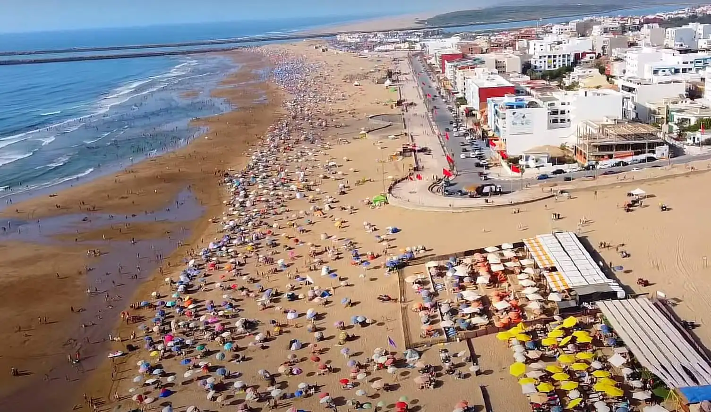

Coastal Living & Natural Assets
Atlantic Coastline.
National Parks. Ancient Heritage.
The investment case for Kénitra property is grounded in industrial and infrastructural fundamentals — but the lifestyle proposition is unambiguously Atlantic. Five minutes from the city centre, Mehdiya's beach extends for kilometres along one of Morocco's most unspoiled coastlines. A Phoenician kasbah stands watch over the working port. The Sidi Boughaba National Park — a Ramsar-designated wetland and internationally protected bird sanctuary — borders the shore. Kénitra offers what almost no emerging investment city can: extraordinary natural assets directly adjacent to a high-growth industrial and economic hub. That combination commands a rental premium. It will command a capital premium too.



Connectivity & Strategic Position
Every major destination within reach.
No coastal city in Morocco is better connected.
Kénitra sits at the intersection of Morocco's Atlantic motorway and its high-speed rail network — placing the capital, the international airport, the coastline, and the country's key economic hubs within easy reach. When the LGV extension to Marrakech opens, Kénitra becomes the nearest Atlantic beach on the high-speed network to over four million annual tourists. That is not speculation. It is infrastructure already under active construction.
by TGV or motorway
International Airport
industrial hub
& national park
*under construction
When the LGV high-speed extension to Marrakech is complete, Kénitra will be just 1h30 from one of the world's most visited cities — which receives over 4 million tourists annually. For those visitors, and for Rabat's rapidly growing population of professionals and expatriates, Kénitra becomes the closest Atlantic beach destination on the entire high-speed network. Coastal and near-beach property in Kénitra, currently among the most affordable in Morocco, will not remain so. The window is open. It will not stay that way.